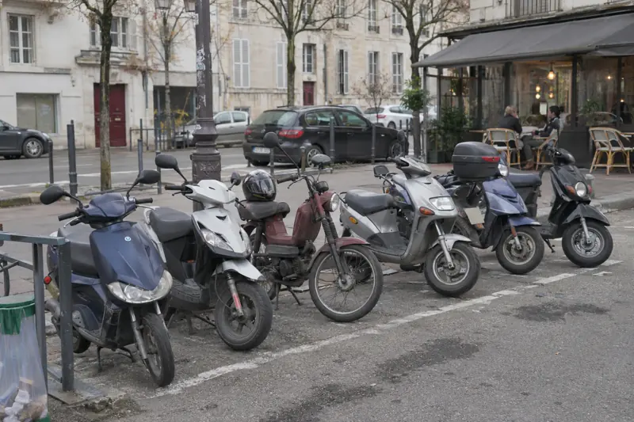

Conseils
Bien choisir, bien rouler.
Des guides simples pour décider entre location et achat, rouler en règle et tirer le meilleur de votre trottinette ou de votre scooter électrique.
 BudgetForfait mobilités durables : et si votre employeur payait votre trottinette ?Votre employeur peut prendre en charge jusqu’à 600 € par an de vos trajets en trottinette électrique, personnelle ou louée. Qui y a droit et comment le demander.Lire l’article
BudgetForfait mobilités durables : et si votre employeur payait votre trottinette ?Votre employeur peut prendre en charge jusqu’à 600 € par an de vos trajets en trottinette électrique, personnelle ou louée. Qui y a droit et comment le demander.Lire l’article  LocationLouer ou acheter sa trottinette électrique : le match, chiffres à l’appui.Location longue durée, achat comptant ou paiement en plusieurs fois : on compare le vrai coût d’une trottinette électrique sur 12, 24 et 36 mois, chiffres à l’appui.Lire l’article
LocationLouer ou acheter sa trottinette électrique : le match, chiffres à l’appui.Location longue durée, achat comptant ou paiement en plusieurs fois : on compare le vrai coût d’une trottinette électrique sur 12, 24 et 36 mois, chiffres à l’appui.Lire l’article  Règles et assuranceTrottinette électrique : les règles pour rouler tranquille en 2026.Assurance, âge minimum, casque, trottoir, amendes : tout ce qu’il faut savoir pour rouler en trottinette électrique en règle en 2026, expliqué simplement.Lire l’article
Règles et assuranceTrottinette électrique : les règles pour rouler tranquille en 2026.Assurance, âge minimum, casque, trottoir, amendes : tout ce qu’il faut savoir pour rouler en trottinette électrique en règle en 2026, expliqué simplement.Lire l’article  ÉcologieLa trottinette électrique est-elle vraiment écologique ?Bilan carbone, fabrication, batterie, durée de vie : on fait le point honnêtement sur l’impact d’une trottinette électrique, et sur ce qui la rend vraiment plus verte.Lire l’article
ÉcologieLa trottinette électrique est-elle vraiment écologique ?Bilan carbone, fabrication, batterie, durée de vie : on fait le point honnêtement sur l’impact d’une trottinette électrique, et sur ce qui la rend vraiment plus verte.Lire l’article 
Scooter 45 km/hScooter électrique pliable 45 km/h : le guide simple.Permis AM, carte grise, assurance, casque et gants, rangement en appartement : le guide simple du scooter électrique pliable 45 km/h, avec l’exemple de l’E-scooter 360.Lire l’article